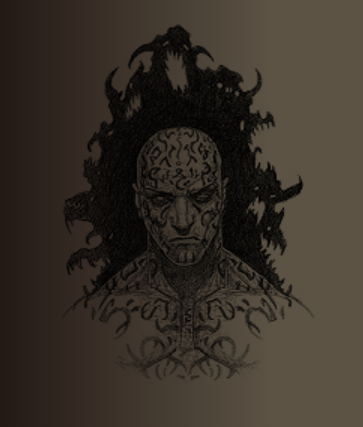
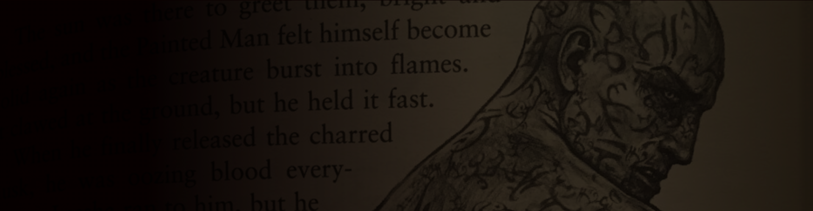

Website inspried by book.
Choose your savior website was made based on book. Demon Cycle by Peter V.Brett. This book has special place in my heart, mostly because of characters. While going throught story of book I found self acceptance.This book reminded me that people often see life from their own perspective. For an incomplete picture. To honor what this book did for me I had dicide to make a website.
The purpose of this website was to choose one of two services to purchase. Thematically, it was a choice between the two protagonists. I wanted this website to be also optimized in terms of mobile devices. What I achieved by starting styling for mobile devices. Then I just started optimizing in terms of desktop devices. The website has navigation to subpages. The subpages were never created because at the beginning of the project I assumed that I would only make the title page.
I wanted the page to be more lively, so I decided to put a banner under the page navigation. The banner was styled with an attachment fixed. Giving the impression that the site is less static. On the main page, using css, I created a simple imitation of an open book. I achived that by using a gradient. For styling the website colors and text, I used the ": root" pseudo-class to make changes to the page easier. It was my first project that purpose was to make it optymalized for moblie users.